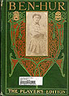

BEN-HUR: A TALE OF THE CHRIST
GETTING THE DATE
1879
Archaeological investigations led by German-American banker and amateur archaeologist Hermann Schliemann begin on the site of Troy, which Schliemann found by using Homer's writings as a guide. [Josh]
During the Exodus of 1879, an estimated 20,000 freed slaves and other African Americans migrate from southern states to Kansas. [Katie F.]
1880 -- YEAR OF PUBLICATION
JUNE 1: The first bare-knuckle heavy-weight world boxing championship is held in Colliers, Pa. Paddy Ryan wins title by knocking out Joe Goss of England in the 85th round. [Pam]
ALSO JUNE 1: First pay telephone is installed in the Yale Bank Building, New Haven. [Greg]
The signing of the Exclusion Treaty by the U.S. and China restricts but does not prohibit the immigration of Chinese laborers. [Aisha]
George Eastman takes out a patent on a flexible roll of film for use in cameras. [Aisha]
The population of Los Angeles doubles in the last decade, a sign of the growing urbanization of the west. [Josh]
According to the U.S. census, the country's population has reached 50,155,783. [Greg]
James Garfield beats President Ulysses S. Grant, former commander-in-chief of the Union Army, in a hotly contested republican primary. [Josh]
Joel Chandler Harris publishes his first
Uncle Remus
book, helping to begin the literary fashion for romanticizing life on the old plantation. [Katie F.]
1881
21-year-old William Bonney (aka Billy the Kid) escapes prison but is soon hunted down and shot. Though he killed 21 people, he quickly became a legend, hero of folk tellings of his life that began almost immediately. [Josh].
The Tuskeegee Institute is founded by Booker T. Washington. [Terry]
Clara Barton establishes the American Red Cross. [Eve]
JULY 2: President Garfield assassinated. After his death on September 19, Vice President Chester A. Arthur became the President. [Eve]
Helen Hunt Jackson publishes
Century of Dishonor
, an account of and protest against the U.S. government's unjust treatment of Native Americans. [Sidney & Kristen]

ILLUSTRATED EDITIONS
IMAGES: FROM THE DRAMATIZATION